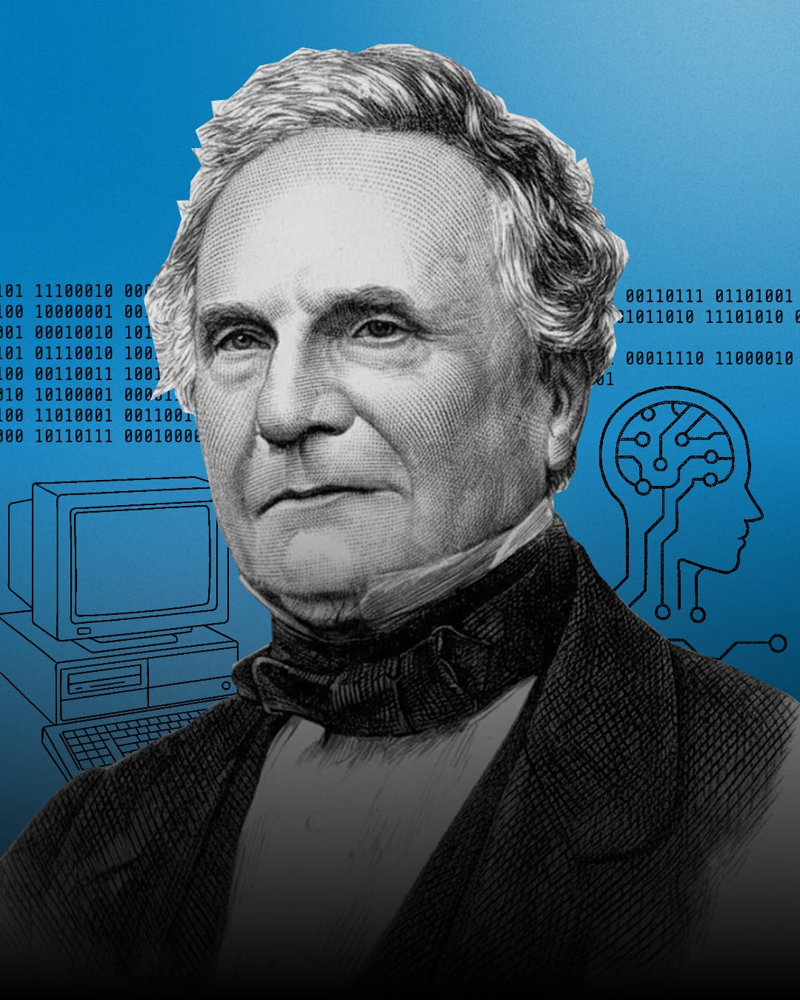
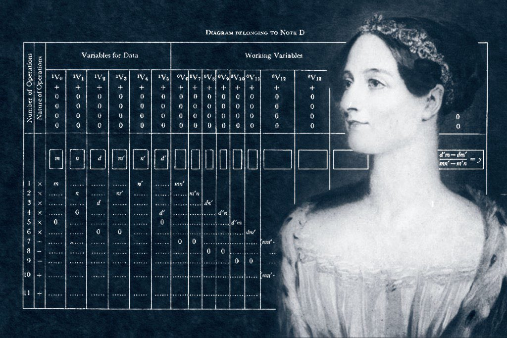

PERSONAJES |
Charles Babbage

Charles Babbage (1791-1871) fue un matemático, filósofo, inventor e ingeniero mecánico inglés.
Es mundialmente reconocido como el "padre de la computación" por haber conceptualizado y diseñado las primeras computadoras mecánicas y programables de la historia.
Aunque la tecnología de su época no le permitió construir sus máquinas por completo, sus diseños sentaron las bases lógicas de los ordenadores modernos.
Ada Lovelace

Ada Lovelace (1815–1852), cuyo nombre de nacimiento fue Augusta Ada Byron, es reconocida históricamente como la primera programadora de computadoras.
Su legado no solo reside en haber escrito código antes de que existieran los ordenadores electrónicos, sino en haber comprendido el potencial de las máquinas para ir mucho más allá del simple cálculo matemático.
Dennys Ritchie

Charles Babbage es el abuelo de la computación y Ada Lovelace la madre, Dennis Ritchie (1941–2011) es, sin duda, el arquitecto que diseñó los cimientos sobre los que se construye prácticamente todo el software moderno.
Cualquier persona que escriba código o use un dispositivo electrónico hoy en día está interactuando con su legado. Estos son sus hitos fundamentales:
1. El Creador del Lenguaje C
A principios de la década de los 70, en los Laboratorios Bell, Ritchie creó el lenguaje de programación C.